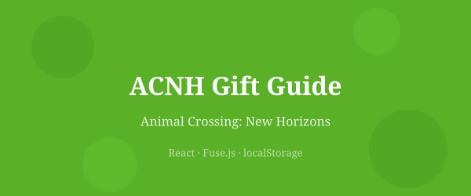

A gift-planning tool for Animal Crossing: New Horizons players

In Animal Crossing: New Horizons, gifting items to villagers increases friendship — but each villager has two favorite styles and two favorite colors, and the game's catalog has over 1,400 clothing items. Figuring out which items in your personal wardrobe actually match a given villager's preferences requires a lot of manual cross-referencing.
ACNH Gift Guide solves this by letting you build a personal clothing inventory and pin the villagers living on your island. Each villager card automatically shows which of your items match their style preferences, so you can find the perfect gift in seconds instead of minutes.
The app is organized into two tabs. The Villagers tab shows the full roster of 391 villagers; pinned ones float to the top. Each card displays the villager's favorite styles as color-coded badges and favorite colors as swatches, plus a live list of matched gifts from your inventory.
The Inventory tab has a two-panel layout: the full clothing catalog on the left with search and filters, and a sticky sidebar on the right showing your current inventory. Clicking an item adds or removes it from your collection, and all villager gift matches update instantly.